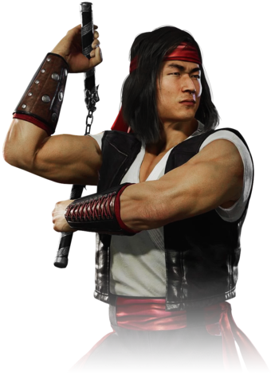

Liu Kang is one of the most popular and accessible characters in the series. He is one of Earthrealm's
greatest warriors, having defeated many to prove his valor. Throughout the series, he has been gradually
portrayed as the main hero, becoming champion after the first Mortal Kombat tournament. Kang has found a
nemesis in the traitorous Shang Tsung, a sorcerer who he has defeated on numerous occasions. He is often
considered the greatest threat to the plans of Shang and his emperor, Shao Kahn. He is a member of the
White Lotus Society and trains extensively at the Wu Shi Academy. It was at the Academy that he was
murdered by a Deadly Alliance of Shang with Quan Chi.
In the first entry in the series, Liu Kang was shown to be non-violent, in that his finisher did not graphically kill the opponent. Starting with Mortal Kombat II, however, all of his Fatalities were more gruesome.
His body was resurrected without his spirit in Mortal Kombat: Deception. This physical half killed hundreds of innocent people, with the skills he refined to protect them while he was alive. Liu Kang retained his personality as a zombie, as he still had his trademark yells. A notable exception is the intro of Armageddon, where he groans like a recognizable zombie.
He is said to be one of the Great Kung Lao's last descendants through various media (a trading card, the first film, etc.) It is possible that Liu Kang and Kung Lao are cousins. He is referred to as the "Immortal Champion of Mortal Kombat" in later games, and his ending in Mortal Kombat: Deception has him again assuming the role upon his restoration to life.
In the first entry in the series, Liu Kang was shown to be non-violent, in that his finisher did not graphically kill the opponent. Starting with Mortal Kombat II, however, all of his Fatalities were more gruesome.
His body was resurrected without his spirit in Mortal Kombat: Deception. This physical half killed hundreds of innocent people, with the skills he refined to protect them while he was alive. Liu Kang retained his personality as a zombie, as he still had his trademark yells. A notable exception is the intro of Armageddon, where he groans like a recognizable zombie.
He is said to be one of the Great Kung Lao's last descendants through various media (a trading card, the first film, etc.) It is possible that Liu Kang and Kung Lao are cousins. He is referred to as the "Immortal Champion of Mortal Kombat" in later games, and his ending in Mortal Kombat: Deception has him again assuming the role upon his restoration to life.